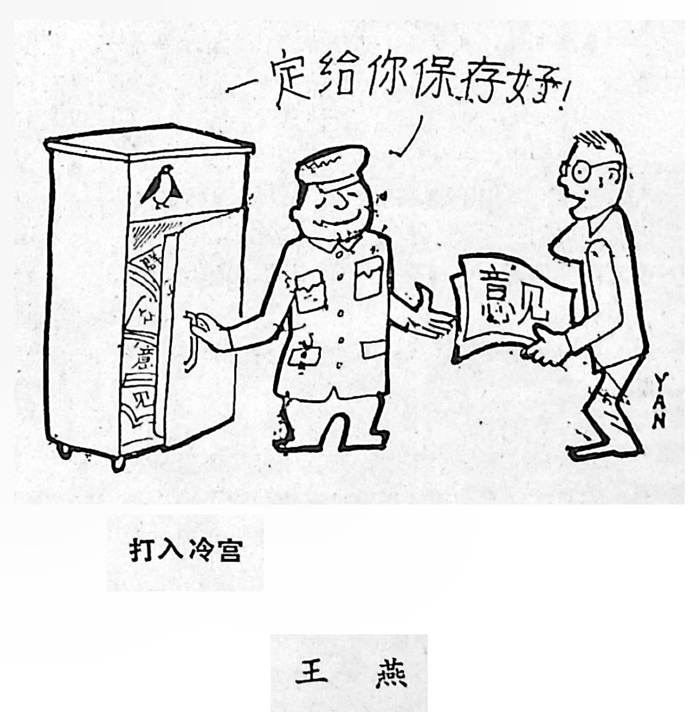

Personnel cartoons 人事漫画
Satirical drawings about cadres, appointments, diplomas and paperwork, from the Chinese personnel-management magazine “Personnel” （人事）
In 1985 the 《人事》 (Renshi, "Personnel") began publishing in Taiyuan, Shanxi Province. Its subject was the reform of the cadre and personnel system: appointment and promotion, title evaluation, staffing quotas, retirement, and the general bureaucratic reforms underway in China’s 1980s, when new and radical ideas about administration, efficiency, and the market were making themselves felt across the Chinese state and economy.
Between the policy reports, on-the-ground reporting, and document reprints, the magazine ran cartoons, often reprinted from Workers' Daily, Satire and Humor and other papers. Picture stories (连环画) on the inside covers told tales of good and bad appointments. Concerns about corruption, inefficiency, laziness, and other bureaucratic maladies dominated the subjects.
Here I’m offering a quick vibe-coded website with the original Chinese text (where decipherable), an English translation and a short description from the issues of this magazine I digitized by hand. Original artists are credited wherever I could extract their names. Many are funny, some are sad, and some are puzzling due to the passage of time or the poor quality of the original materials. Enjoy!
187 items from 45 issues (1985–1990), by 95 named artists and many unnamed ones.
